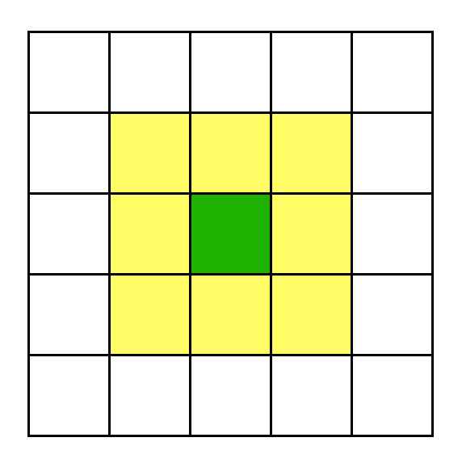

En la segunda práctica trabajamos con autómatas celulares [6] en dos dimensiones, particularmente el famoso juego de la vida [7]. El estado del autómata se representa con una matríz booleana (es decir, contiene ceros y unos). Cada celda es o viva (uno) o muerta (cero). En cada paso, la supervivencia de cada celda (verde) se determina a partir de los valores de sus ocho vecinos (amarillos):
En los extremos de la matríz, las celdas simplemente tienen menos vecinos. (Otra alternativa sería considerar el espacio como un torus — pareciendo una dona — donde el extremo de abajo se reune con el extremo de arriba igual como los lados izquiero y derecho uno con otro.
La regla de supervivencia es sencilla: una celda está
viva si exactamente tres vecinos suyos están vivos. Para
comenzar, usamos números pseudoaleatorios como el estado
inicial. En R se necesita el paquete sna para
visualizar matrices de este tipo con facilidad, mientras en
Python se necesita el paquete numpy además
del matplotlib de la práctica anterior (requerda
instalar una vez y cargar antes de cada uso).
Diseña y ejecuta un experimento con por lo menos 30 réplicas para determinar la probabilidad de creación de vida en una malla de dimensión mayor o igual a diez, usando como límite de vida la supervivencia de 50 o más iteraciones en función de la probabilidad inicial de vida por lo menos tres niveles en $(0, 1)$. Grafica y tabula los hallazgos.
El primer reto es modificar la simulación para que modele algún tipo de crecimiento (o cristalización) en la microestructura de un material. Núcleos aparecen al azar en celdas desocupadas y expanden con una tasa constante a celdas vecinas hasta agotar el espacio disponible. Examina la distribución de los tamaños de los núcleos que no toquen el borde al finalizar la simulación, elegiendo el tamaño de la zona y el número de semillas de tal forma que sean por lo menos la mitad. Codifica las identidades de los núcleos como enteros y normaliza antes de dibujar la matríz para que los niveles de gris estén entre cero y uno como espera la rutina que los visualiza; también puedes utilizar palettes de colores, con que se distingan bien.
El segundo reto es ejecutar el un autómata celular en un modelo
tri-dimensional, por ejemplo
estos modelos; se puede visualizar archivos STL en
en un servicio web. Si
el modelo que quieres usar está en formato binario (es decir, no
contiene texto), se convierte en formato ASCII
usando un
script de ruby con ruby convertSTL.rb modelo.stl donde el
segundo argumento es el nombre del archivo del modelo STL por
convertir, lo que produce un modelo-ascii.stl como
resultado.
De la versión ASCII del modelo STL, se extrae un CSV con los
normales y las tres esquinas con
python3 ascii2csv.py Star.stl > Star.csv
en el siguiente formato:
En el reto, procesa a ese CSV en un data.frame de R o
con pandas en Python: dos triángulos son vecinos
si comparten dos esquinas, dando a cada triángulo un total de
tres vecinos. Al inicio, cada celda está o prendida
(TRUE) o apagada (FALSE), uniformemente al
azar. Cada celda tomará el estado en el que se encuentra
la mayoría de sus vecinos (sin contar a si mismo). Se
proporciona una plantilla del esquema general en R:
input = "modelo.csv"
m = read.csv(input, header = FALSE) # modelo 3D
n = dim(m)[1] # cuantas celdas hay
init = runif(n) > 0.5 # estados iniciales, mitad prendidos
state = init
require("parallel")
cluster <- makeCluster(detectCores() - 1)
clusterExport(cluster, "m")
clusterExport(cluster, "n")
dur <- 5 # cuantos pasos
for (iter in 1:dur) {
clusterExport(cluster, "state")
state <- parSapply(cluster, 1:n, step) # el reto es implementar la rutina step
print(".") # indicador de avance rudimentario
}
stopCluster(cluster)
m$state = state
write.table(m, "resultado.csv", sep=',', col.names = FALSE, row.names = FALSE)
Agrega los estados de la última iteración como una nueva columna (la
última) en el data.frame y guarda los datos en formato CSV como
salida (la rutina agrega un contador en la primera columna), digamos resultado.csv. A este
CSV se convierte de regreso a formato ASCII OBJ con
python3 csv2obj.py resultado.csv
> resultado.obj lo que se puede visualizar
en otro servicio web. El ejemplo abajo muestra el estado inicial y la primera iteración para una esfera.
https://satuelisa.github.io/simulation/p2.html